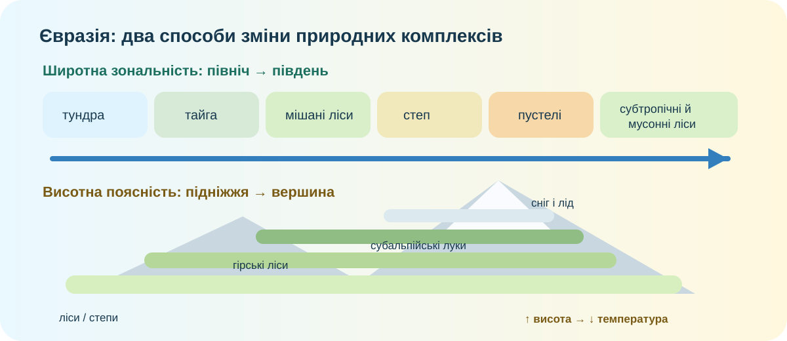

1. Гіпотеза — 3 хв
Теза: природні зони Євразії змінюються тільки через широту.
2. Карта без підказки — 5 хв

Завдання. Простежте три маршрути: 1) Таймир → Індія; 2) Атлантичне узбережжя Франції → Казахстан; 3) підніжжя Гімалаїв → високогір’я. Які з них показують широтну зональність, а які — інший механізм?
3. Ланцюг зон: закономірність, але не «лінійка» — 5 хв
Завдання 1. Зіставте зони з типовими ґрунтами:
Завдання 2. Чому степи й пустелі в центрі Євразії займають величезні площі, хоча на тих самих широтах у Західній Європі поширені ліси?
4. Супутникові дані: де карта стає доказом — 6 хв

NASA Earth Observatory: Гімалаї та Тибет із космосу. Висотні контрасти змінюють температуру, зволоження й рослинність на дуже короткій горизонтальній відстані.
Перевіряємо покрив поверхні
Відкрийте Copernicus Land Monitoring Service або NASA Worldview. Знайдіть Центральну Європу, Казахстан і південні схили Гімалаїв. Порівняйте колір та структуру рослинного покриву.
Copernicus Land ↗NASA Worldview ↗
Методологічна пастка. Супутник бачить покрив поверхні, але природна зона — це не лише «колір рослинності». Потрібні ще клімат, ґрунти, рельєф і сезонність.
Доказове питання. Який із трьох районів найкраще спростовує тезу «природні зони залежать лише від широти»? Обґрунтуйте двома ознаками.
5. Висотна поясність — 5 хв
Завдання. Чому цей ряд подібний до руху з півдня на північ, хоча учень фактично майже не змінює широту?
Ускладнення. Чому на південному схилі тієї самої гори межі поясів часто лежать вище, ніж на північному?
6. Коротке відео + висновок — 3 хв
Після перегляду
Запишіть одну закономірність і один виняток, який пояснюється не широтою.
7. Теорія після дослідження — 3 хв
Широтна зональність — закономірна зміна природних комплексів із півночі на південь унаслідок зміни сонячної радіації, температури та зволоження. У Євразії вона ускладнюється величезними розмірами материка, різною віддаленістю від океанів, циркуляцією повітря та гірськими бар’єрами.
Висотна поясність — зміна природних комплексів із висотою. Її головний механізм — зниження температури та зміна зволоження з підняттям у гори.
Ключова думка: природна зона виникає не від одного чинника. Це результат взаємодії клімату, ґрунтів, рельєфу, вод і живих організмів.
8. CER — 3 хв
Claim: «Широта задає загальну схему природних зон Євразії, але не пояснює її повністю».
Домашнє завдання
Опрацюйте §55. Оберіть один маршрут: Скандинавія → Середземномор’я або Західна Європа → Монголія. Складіть таблицю «ділянка маршруту — природна зона — ґрунт — головний чинник». Додайте один скриншот із NASA Worldview або Copernicus як доказ.